23 years calling games. From a $7/hour job at a 26-watt rural AM station to the nation's 12th biggest media market and the College Football Playoff National Championship.
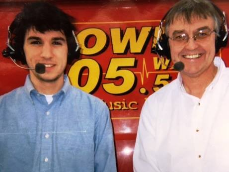
Seven dollars an hour, starting as a college junior. DJing top-40 radio five nights a week, delivering morning sports updates, calling high school play-by-play, and hosting a daily sports talk show — all while serving as sports editor of the daily local paper during an AP award-winning tenure.
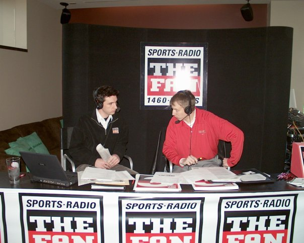
Pregame and postgame shows for Ohio State football and basketball covering national championship games in both sports. Filling in on talk shows alongside Chris Spielman and Kirk Herbstreit, hosting a Sunday morning sports show, and learning what it means to bring it every single day at a high-profile station in my hometown.
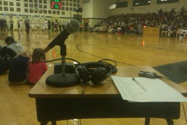
A part-time job at IMG College as a seasonal producer and studio host for their Pac-10 brands — including the Washington Huskies, the first connection with Bob Rondeau. Side gigs calling Radford women’s basketball and Galax high school football and basketball, calling the lowest division in the state from a student’s desk with a stick mic.
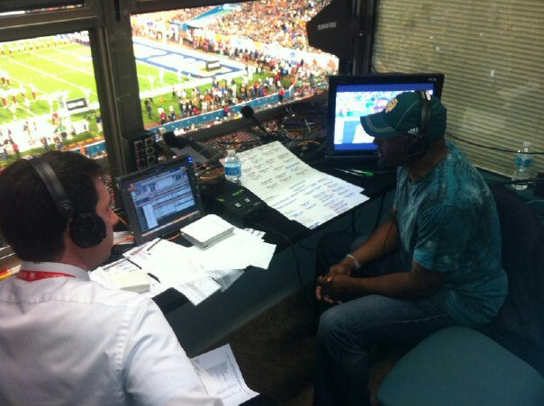
Promoted to full-time, overseeing more than a dozen Division I schools and managing the Notre Dame football radio network — over 130 stations nationwide. Hosted pregame and postgame on the national broadcast, including live from the BCS National Championship Game. Off-air responsibilities taught me everything about the business of play-by-play: affiliate recruitment, contract negotiation, budgeting, sponsor integration and more.
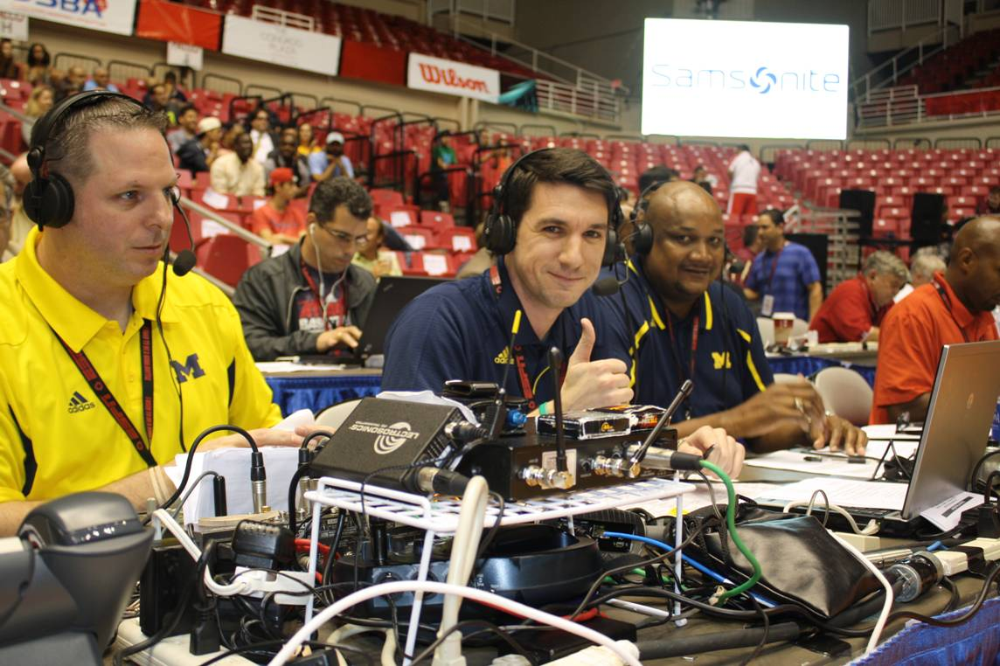
The job with IMG opened the door to Division I fill-in play-by-play across IMG’s portfolio of properties. It started with my alma mater, Ohio University, but quickly grew to fill-in work for Michigan basketball and other Power Conference brands. It was tape from the Puerto Rico Tipoff with the Wolverines and connections made on the national call of the American Conference Tournament that led to my next freelance opportunity.
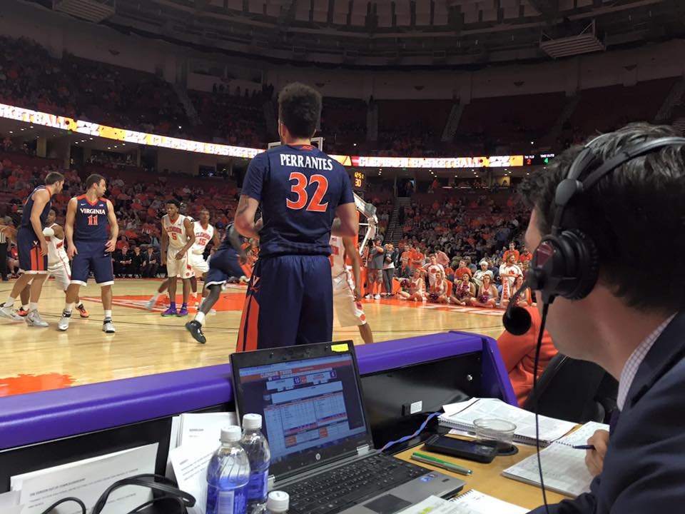
Named Clemson’s basketball play-by-play voice in 2014 while still living in Winston-Salem — a three-and-a-half-hour drive each way to every home game. Three seasons courtside in the ACC, calling games at Duke, North Carolina, Syracuse, and Louisville, including some thrilling upsets and some heartbreaking losses during the program’s build toward national prominence.
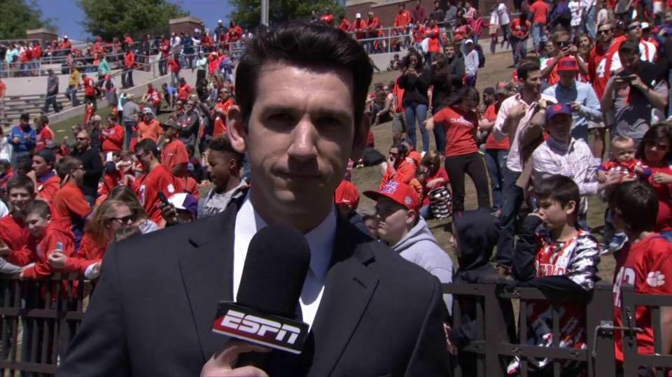
The Clemson role extended well beyond radio. Hosting the Brad Brownell basketball coaches’ show on the regional Fox Sports networks throughout the Southeast, and working the sidelines for Clemson spring football games on ESPN3.
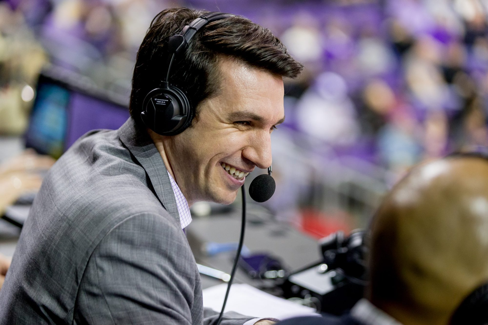
Named the Voice of the Washington Huskies in August 2017, succeeding legendary broadcaster Bob Rondeau. Navigated a lot of highs and lows. Basketball has gone dancing as regular season conference champs, while suffering through a 5-win season two years later. Football has seen everything from a coach’s firing to a thrilling 21-game winning streak.
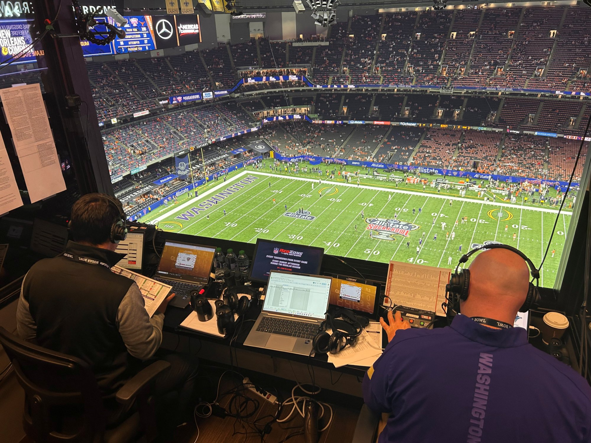
Washington’s historic 2023 season meant calling games on the biggest stages in college football. Two epic rivalry games decided on last second field goals. A perfect regular season. A Top 5 showdown in the Conference Championship in Las Vegas. The Superdome for the Sugar Bowl. NRG Stadium for the National Championship. And a lot of lessons learned on how to handle historic moments.
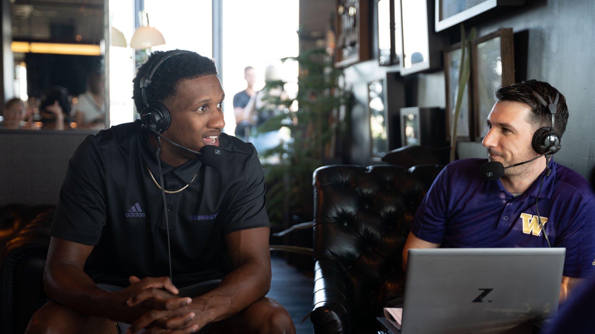
More important than simply calling games is the ability to create content that engages fans and drives revenue. Creating podcasts, conducting compelling short- and long-form interviews, and pumping out insightful social media content is crucial. Simultaneously, collaborating with sales staff and production staff helps raise brand affinity and foster corporate relationships.
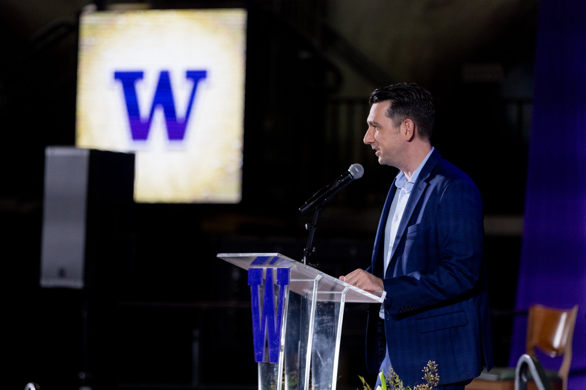
Emceeing Husky Hall of Fame induction ceremonies, preseason pep rallies, season-ticket holder events, and athletic department banquets in front of thousands. Being a trusted source in building meaningful relationships with athletic department staff, coaches, players, donors and corporate partners.